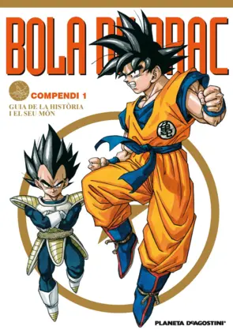

Qui no coneix a Goku i els seus amics?
Amb el pas del temps, bola de drac s'ha anat
consolidant com un dels manga i animes més mítics i
originaris d'aquest tipus de productes.
L'història tracta d'un nen que viu a la terra, en Goku
amb una força extraordinaria i una cua, no cal saber res més
per començar a llegir...
